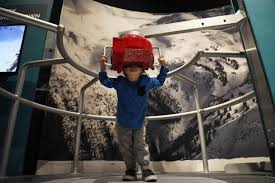
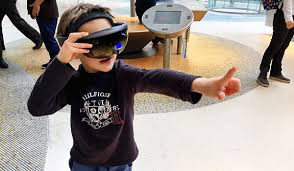
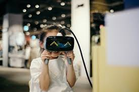
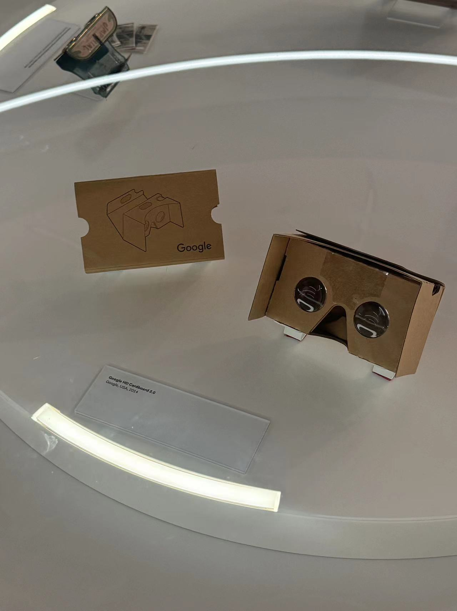

Virtual Reality
Pedagogical Philosophy: VR can create immersive experiences, allowing children to interact with art in new and engaging ways.




Museum Activities:
- Virtual Museum Tours: Educators can guide children to use VR to explore parts of the museum or famous artworks that aren't physically present. Children can discuss their experiences with their educators.
- Educators can set up stations where children can create their own color-based artworks inspired by museum pieces.
Values:
VR promotes experiential learning and interactive communication, making abstract concepts more tangible and engaging.